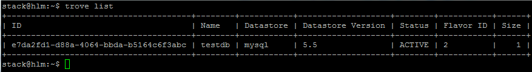
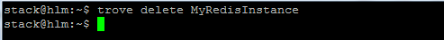

This topic describes how to create a database instance from the command line.
- Log in to the installer node for your HPE Helion OpenStack environment and source the service.osrc file:
. service.osrc
- Use the trove create command to create the new database. The syntax is as follows:
trove create <name> <flavor>
- [--size <size>]: Size of the new database in gigabytes. This should be a minimum size of 5, with a recommended size of 10 or greater.
- [--databases <databases> [<databases> ...]]: The names of one or more databases to be created on the new instance.
- [--users <users> [<users> ...]] [--backup <backup>]: Users to be created on the instance.
- [--availability_zone <availability_zone>]: The OpenStack availability zone in which to create the new instance
- [--datastore <datastore>]: The architecture to use for the new datastore (MySql, Redis, etc.). The default is MySql. To list valid values, enter trove datastore-list
- [--datastore_version <datastore_version>]: The database version. To list valid values, enter trove datastore-version-list <datastore>
- [--nic <net-id=net-uuid,v4-fixed-ip=ip-addr,port-id=port-uuid>]: The OpenStack network on which to create the new instance. This is required, and should be the same network that any application that accesses the
database is on.
- [--configuration <configuration>]: The configuration group to which to add the new instance. Configuration groups can be applied after instance creation using trove configuration-attach
- [--replica_of <source_instance>] [--replica_count <count>]
Note: Database instances require a minimum volume size of 5, with a recommended size of 10.
Note: Database instances require a minimum flavor of 2 for MySql, 3 for MongoDB and Redis,
and 4 for Vertica Preview.
- Example 1: Create a single MySql instance
The following command creates a single (non-clustered) MySql instance called MyInstance with flavor m1.medium, allocating 10 GB of space (the MySql datastore is the default):
trove create MyInstance 3 --size 10
- Example 2: Create a MongoDB instance
The following command creates a single MongoDB instance called
MyMongoDBInstance with flavor m1.large, allocating 10 GB of space,
creating a database called MyMongoDatabase, and a user called Admin with
password password:
trove create MyMongoDBInstance 4 --datastore mongodb --size 10 --databases MyMongoDatabase --users admin:password
- Example 3: Create a Redis instance
The following command creates a single Redis instance called MyRedisInstance
with flavor m1.medium, allocating 1 GB of space.
trove create MyRedisInstance 3 --datastore redis --size 10
- Example 4: Create a replicated MySql instance
The following command creates a MySql instance as a replica of another MySql database (Replication is only supported
for MySql databases).
trove create MyReplicatedInstance 4 --replica_of 18afdf3c-3f38-4bda-b40a-13b675c7f857
- Example 5: Create a Vertica Preview instance
The following command creates a single Vertica Preview instance called MyVerticaInstance with flavor m1.large, allocating 2 GB of space.
trove create --size 10 --datastore vertica_preview --datastore_version 7.1 MyVerticaInstance 4
To view created instances, use the trove list command:

To delete a database instance, use the trove delete command:
